Echipa & Structura ASMO
Toți membrii asociației reuniți pe o singură pagină: Consiliul Director, Comitetele și Diviziile de suport organizațional din cadrul FMF Oradea.
Consiliul Director
Echipa aleasă pentru coordonarea strategică, administrativă și reprezentarea oficială a studenților mediciniști în forurile universitare.
Președinte ASMO
Președintele reprezintă oficial Asociația Studenților Mediciniști din Oradea în raport cu conducerea Facultății de Medicină și Farmacie, Senatul Universității din Oradea, forurile academice și partenerii externi.
Coordonează strategia generală a asociației, veghează la respectarea statutului și prezidează ședințele Consiliului Director și ale Adunării Generale, asigurând direcția de dezvoltare a întregii comunități studențești.
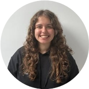
Jazmin Eleneș
Președinte ASMO PreședinteVicepreședinte Relații Externe (VPE)
Vicepreședintele pe Relații Externe este responsabil de legătura directă cu federația națională FASMR, cu celelalte asociații de studenți mediciniști din centrele universitare din țară și cu autoritățile publice locale.
Asigură reprezentarea delegației orădene la Adunările Generale FASMR, facilitează parteneriate inter-asociaționale și sprijină racordarea activității ASMO la inițiativele naționale și internaționale.
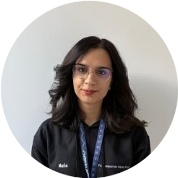
Maria Roja-Petruș
VPE • Vicepreședinte Relații Externe VPEVicepreședinte Relații Interne (VPI)
Vicepreședintele pe Relații Interne monitorizează și sprijină desfășurarea activității tuturor comitetelor și diviziilor de suport din cadrul ASMO, asigurând coeziunea și buna funcționare a echipei extinse.
Facilitează comunicarea inter-departamentală armonioasă, implicarea voluntarilor în proiecte și identificarea soluțiilor optime pentru nevoile organizatorice interne ale membrilor asociației.
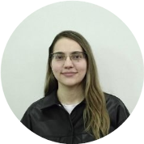
Andreea Tanasă
VPI • Vicepreședinte Relații Interne VPIVicepreședinte Financiar Interimar (VPF)
Vicepreședintele Financiar administrează fondurile asociației, întocmește bugetele de venituri și cheltuieli și garantează transparența deplină a utilizării resurselor financiare.
Verifică deconturile fiecărui proiect, centralizează documentele justificative contabile și colaborează strâns cu divizia de fundraising pentru susținerea bugetară a fiecărei inițiative studențești.
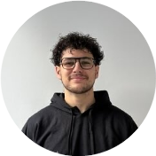
Matei Mărginean
VPF • Vicepreședinte Financiar Interimar VPFSecretar General (SG)
Secretarul General este responsabil de evidența documentelor oficiale ale asociației, redactarea proceselor-verbale ale ședințelor Consiliului Director și ale Adunării Generale, precum și managementul arhivei.
Coordonează fluxul administrativ intern, actualizează baza de date a membrilor activi și gestionează corespondența oficială, asigurând respectarea procedurilor statutare ale organizației.
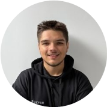
Răzvan Tîrla
SG • Secretar General SGComitetele ASMO
Comitetele specializate pe ramuri de activitate medicală, prevenție sanitară comunitară, educație clinică și mobilități internaționale.
Comitetul pentru Sănătate Publică (SCOPH)
Comitetul pentru Sănătate Publică derulează campanii de prevenție, conștientizare și educație medicală dedicate comunității orădene și cetățenilor din județul Bihor, adresând factorii majori de risc sanitar.
Printre activitățile principale se regăsesc campaniile de donare de sânge („Donează sânge! Fii erou!”), acțiunile de măsurare a tensiunii arteriale și a glicemiei, conștientizarea diabetului și caravanele medicale de informare sanitară.
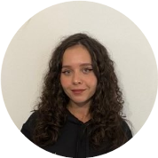
Damiana Anițulesei
LPO • Ofițer Local Sănătate Publică LPOComitetul pentru Educație Medicală (SCOME)
Comitetul pentru Educație Medicală susține dezvoltarea profesională continuă și abilitățile practice ale studenților de la FMF Oradea, completând curicula universitară prin instruire practică.
Organizează workshop-uri practice de abilități clinice și chirurgicale (tehnici de noduri și suturi, manevre de prim ajutor), conferințe medicale studențești, prezentări științifice și evenimente dedicate succesului academic universitar.
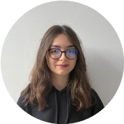
Diana Sandu
LOME • Ofițer Local Educație Medicală LOMEComitetul pentru Sănătatea Reproducerii & HIV/SIDA (SCORA)
Comitetul promovează educația sanitară bazată pe dovezi științifice privind sănătatea reproducerii, prevenția infecțiilor cu transmitere sexuală și importanța controalelor preventive periodice în rândul tinerilor.
Voluntarii susțin ateliere interactive în liceele orădene, marchează Ziua Mondială de Luptă Împotriva HIV/SIDA, informează cu privire la prevenția cancerului de col uterin prin vaccinarea anti-HPV și derulează acțiuni dedicate sănătății masculine (Movember).
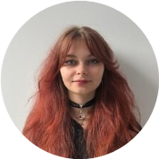
Maria Abrudan
LORA • Ofițer Local Sănătate Reproductivă LORAComitetul pentru Drepturile Omului & Pace (SCORP)
Comitetul constituie punctul de sprijin umanitar și caritabil al asociației, promovând drepturile pacienților, etica în practica medicală, egalitatea și susținerea activă a categoriilor sociale defavorizate.
Organizează acțiuni caritabile dedicate copiilor spitalizați (secțiile de pediatrie și oncologie), proiectul tradițional Spitalul de Ursuleți pentru reducerea anxietății celor mici față de actul medical, precum și acțiuni de suport comunitar.
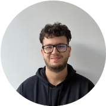
Victor Budișca-Hasan
LORP • Ofițer Local Drepturile Omului LORPComitetul pentru Schimburi Clinice & Cercetare (SCOPE / SCORE)
Comitetul facilitează mobilitățile naționale și internaționale pentru studenții mediciniști din Oradea, prin intermediul parteneriatelor federației naționale FASMR și a federației internaționale IFMSA.
Oferă studenților oportunitatea de a efectua stagii clinice și de cercetare de o lună în spitale universitare partenere din întreaga lume, schimburile academice naționale TransMed și asigură primirea și integrarea studenților internaționali la Oradea.
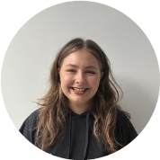
Ioana Murguleț
LORE • Ofițer Local Schimburi & Cercetare LOREDiviziile de Suport ASMO
Echipele operative care asigură logistica, resursele financiare, tehnologia, identitatea vizuală și comunicarea asociației.
Divizia de Fundraising (FR)
Divizia de Fundraising are drept misiune principală asigurarea resurselor financiare și a parteneriatelor materiale necesare pentru implementarea optimă a fiecărui proiect organizat de ASMO.
Activitatea cuprinde elaborarea pachetelor și contractelor de sponsorizare, identificarea potențialilor parteneri comerciali din industria medicală și mediul de afaceri, negocierea beneficiilor și păstrarea legăturilor de durată cu susținătorii asociației.
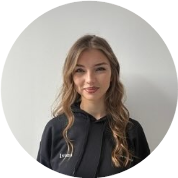
Ivona Ionică
Coordonator Divizia Fundraising FundraisingDivizia de HR & Logistică
Divizia de HR & Logistică reprezintă nucleul administrativ care se asigură de organizarea comunității de voluntari și de punerea la dispoziție a infrastructurii materiale pentru evenimente.
Echipa gestionează baza de date și orele de activitate ale voluntarilor, procedurile de recrutare și integrare, asigurând concomitent rezervarea sălilor, aprovizionarea cu materiale și asistența logistică la fiecare acțiune.
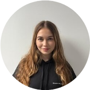
Nely Nedelcu
Coordonator Divizia HR & Logistică HR & LogisticăDivizia de Grafică și IT
Divizia de Grafică și IT asigură identitatea vizuală distinctă și infrastructura tehnică digitală a asociației, susținând vizual fiecare campanie și proiect studențesc.
Echipa creează afișe, machete grafice și materiale de comunicare conforme ghidului vizual, administrează platformele digitale și site-ul web ASMO și oferă asistență tehnică audio-video și IT în timpul conferințelor și atelierelor.
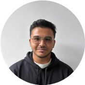
Daniel Iancu
Coordonator Divizia Grafică și IT Grafică & ITDivizia de PR & Marketing
Divizia de Relații Publice și Marketing este canalul principal de comunicare și imagine al asociației în mediul universitar orădean și pe rețelele sociale oficiale (@asmo_oradea pe Instagram și Facebook).
Membrii diviziei redactează textele de promovare, comunicatele oficiale de presă, elaborează strategia de distribuție online a evenimentelor și mențin dialogul deschis și prompt cu studenții mediciniști.
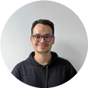
Tudor Ilinca
Coordonator Divizia PR & Marketing PR & MarketingDivizia de Capacity Building
Divizia de Capacity Building este dedicată dezvoltării personale și formării de competențe transversale (soft skills) pentru voluntarii asociației, prin metode de educație non-formală.
Organizează sesiuni de training, ateliere de comunicare și vorbit în public, cursuri de leadership, managementul timpului și teambuilding-uri menite să pregătească viitorii lideri din domeniul medical.
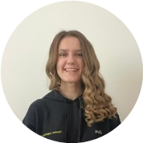
Sara Ionuț
Coordonator Divizia Capacity Building Capacity BuildingDivizia de Entertainment Interimar
Divizia de Entertainment aduce studenții împreună dincolo de amfiteatre și săli de laborator, prin organizarea manifestărilor festive, sociale și recreative tradiționale din viața universitară.
Echipa coordonează Balul Bobocilor Mediciniști, galele festive, serile sociale și activitățile de relaxare care întăresc spiritul de comunitate și creează amintiri memorabile pentru toți studenții facultății.
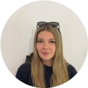